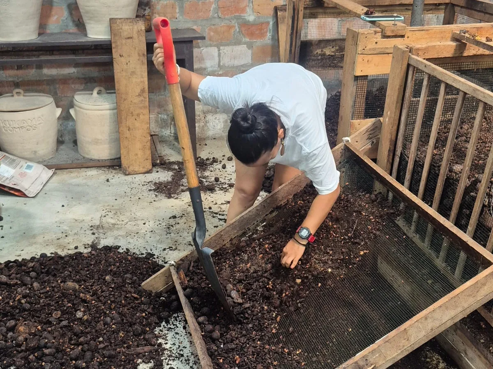
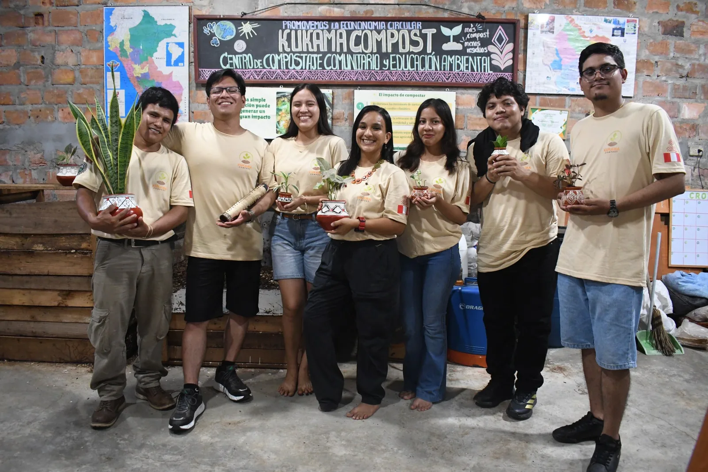
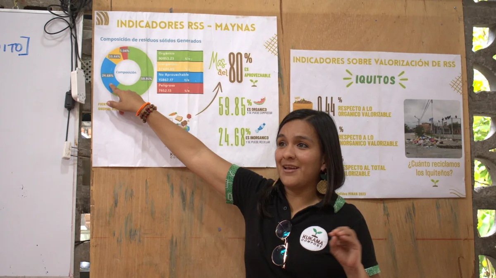
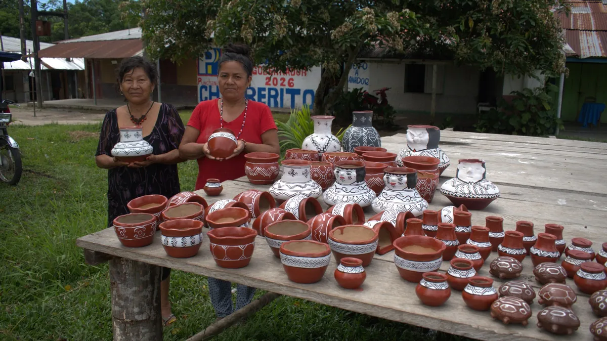

Compostaje
Promovemos el aprovechamiento responsable de residuos orgánicos y la salud del suelo.
Quiero compostar →Desde la Amazonía peruana
Transformamos residuos orgánicos en oportunidades, conocimiento y bienestar para nuestras comunidades.

Nuestro propósito
En Kukama Compost creemos que el cambio empieza con una cáscara, una conversación y el respeto por los saberes de quienes cuidan la Amazonía. Unimos acción ambiental, educación y economía comunitaria.
Lo que hacemos
Conectamos prácticas sostenibles con personas, instituciones y comunidades.

Promovemos el aprovechamiento responsable de residuos orgánicos y la salud del suelo.
Quiero compostar →
Diseñamos talleres y experiencias prácticas para instituciones, colegios y comunidades.
Ver talleres →
Visibilizamos productos y artesanías elaboradas por manos kukama.
Conoce más →Aprendamos juntos
Organizamos actividades participativas para aprender a separar residuos, preparar compost y reconectar con la tierra.
Raíces que nos inspiran
Trabajamos junto a comunidades amazónicas y acompañamos la difusión de las creaciones de artesanas y artesanos kukama. Cada producto lleva historia, identidad y cuidado por el territorio.
Conoce nuestras artesanías →Cuidar la tierra también es cuidar nuestra memoria.
Comunidad kukama
Trabajo en equipo
Hagamos algo bueno
Escríbenos para colaborar, solicitar una actividad o conocer nuestras iniciativas.
Acceso interno
Ingresa con tu usuario y contraseña para acceder al panel de Kukama Compost.